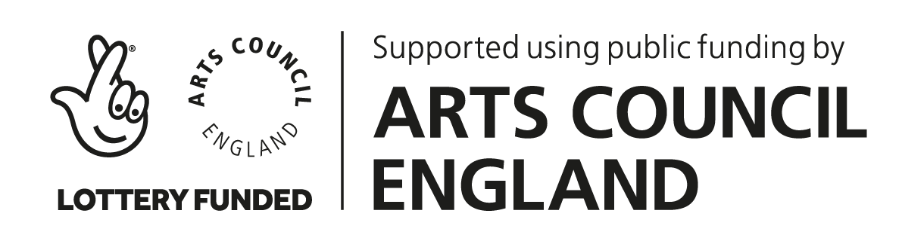

840: New Music for Violin and Piano
7.30pm, 16 December 2017 at the St James', Islington

840 presented a programme of new music for violin and piano, performed by violinist Ruben Zilberstein and pianist Mateusz Rettner (Explore Ensemble).
Linda Catlin Smith’s piece from 1997, ’With Their Shadows Long’, provided the natural starting point for the creation of the programme with its preoccupation with the physicality of sound, and a care and natural intuition for a sense of rightness in placement and form.
The rest of the programme consisted entirely of brand-new pieces by Matteo Fargion, Georgia Rodgers, James Luff and Alex Nikiporenko, all written especially for this concert.
An exciting first for 840 is the music of Matteo Fargion. Matteo is a composer perhaps best known for his close associations with the world of dance, in particular his decades-long collaboration with Jonathan Burrows, creating and touring a series of duets which have become celebrated all over the world for their rare combination of intellectual rigour and humour.
The concert was kindly supported using public funding by Arts Council England.
|  |